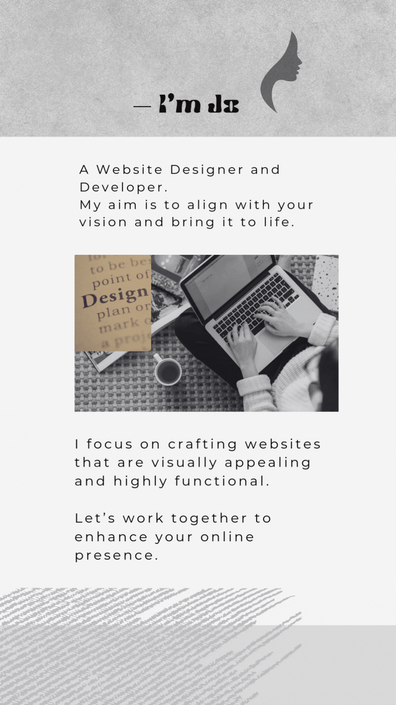

<!DOCTYPE html>
<html lang="en">
<head>
    <meta charset="UTF-8">
    <meta http-equiv="X-UA-Compatible" content="IE=edge" />
    <meta name="viewport" content="width=device-width, initial-scale=1.0">
    <title>Jo Web Designs | Custom Web Development & UI/UX Services</title>
    <link rel="stylesheet" href="whole.css">
    <!-- Favicon & Touch Icons -->
  <link rel="icon" href="images/jo-logo.png" type="image/x-icon" />
  <link rel="shortcut icon" href="images/jo-logo.png" type="image/x-icon" />
  <link rel="apple-touch-icon" sizes="180x180" href="images/jo-logo.png" />
  <meta name="description" content="Jo Web Designs creates custom websites and intuitive UI/UX designs to elevate your brand and engage your users." />
  <meta name="keywords" content="Web Development, UI Design, UX Design, Front-end Developer, Jo Web Designs" />
  <meta name="author" content="Jana Eickenberg" />
   <!--facebook open graph-->
<meta property="og:url"         content="https://jowebdesigns.netlify.app/" />
<meta property="og:title"       content="Jo Web Designs | Custom Web Development & UI/UX" />
<meta property="og:description" content="Custom websites and user-focused UI/UX by Jo Web Designs." />
<meta property="og:image"       content="https://jowebdesigns.netlify.app/images/hero.gif" />
  <link rel="canonical" href="https://jowebdesigns.netlify.app/" />
    
</head>
</html>
<body>
    <header>
        <div class="logo-container">
            
            
            </div>
        <div class="desktop-nav">
            
            <nav>
                <ul>
                    <li><a href="index.html">Home</a></li>
                    <li><a href="index.html#about">About</a></li>
                    <li><a href="index.html#portfolio">Portfolio</a></li>
                    <li><a href="index.html#service">Service Breakdown</a></li>
                    <li><a href="contact.html">Contact Jo</a></li>
                </ul>
            </nav>
        </div>
        <div class="fab-menu">
          <button id="fab-toggle" aria-label="Open menu">☰</button>
          <div class="fab-items">
            <button class="fab-close" aria-label="Close menu">&times;</button>
            <a href="index.html">Home</a>
            <a href="#about">About</a>
            <a href="#portfolio">Portfolio</a>
            <a href="#service">Services</a>
            <a href="#skills">Skills</a>
            <a href="contact.html">Contact</a>
          </div>
        </div>
            
    </header>

    <main>
        <div class="hero">
            <a href="contact.html" class="contact-button">
            </a>
            
        </div>

        <section class="about-section" id="about">
        
          
            
            <hr>
            
      </section>

        <section id="portfolio" class="portfolio-section">
            <h2>Past Work</h2>
            <hr>
            <p style="text-align: center; padding: 20px; color:rgb(49, 49, 49); font-weight:600; margin-bottom: 40px;">
                Check out my portfolio of projects below—more are available upon request. 
                This presentation highlights my expertise in front-end development and Angular frameworks, 
                and demonstrates how I incorporated UX and UI design principles at every stage, 
                from initial wireframes through final mockups.
            </p>

            <div class="portfolio-embed-container">
              <div class="portfolio-overlay"></div>
              <iframe
                loading="lazy"
                src="https://www.canva.com/design/DAGlyHwezuY/4sUYN3gggidoleiv_2lyRQ/view?embed"
                allowfullscreen
                allow="fullscreen"
              ></iframe>
            </div>
            
          </section>
          

            <section id="service">
                <h2>What I Offer</h2>
                <hr>
                <div class="service-grid">
                  <!-- Service Card 1 -->
                  <div class="service-item">
                    
                    <h3>Custom Website Development</h3>
                    <p>Your website is often the first impression someone has of your business — and in a world full of templates and lookalikes, standing out matters.</p>
                    <p style="text-align: center; font-size: 14px; font-style: italic; letter-spacing: 2px;">With custom web development, your site is:</p>
                        <!--list of benefits-->
                       <ul>Tailored to You — Not Just "Good Enough"
                        <li>You don’t have to squeeze your brand into a template. Instead, I build your site around your goals, your style, and your audience, giving you a unique design that reflects your identity.</li>
                       </ul>
                       <ul>Built for Functionality & Growth
                        <li>Custom development allows us to add the features you need — whether that’s a booking form, eCommerce, animations, or something totally unique — without limitations. Plus, it's easier to scale as your business grows.</li>
                       </ul>
                       <ul> Mobile-Ready & User-Friendly
                        <li>Every custom site I build is responsive, meaning it looks and works great on phones, tablets, and desktops. That means a better experience for your visitors — and better results for you.</li>
                       </ul>
                       <ul>Faster, Cleaner, and SEO-Ready
                        <li>Templates often come with bloated code. I write clean, optimized code that helps your site load faster, perform better, and rank higher in search engines.</li>
                       </ul>
                       <ul>Real Support from a Real Person
                        <li>With me, you get more than a website. You get a collaborator who understands your needs and walks you through the process, step-by-step — no confusing tech talk.</li>
                       </ul>

                    <button class="price-btn" data-service="dev">View Starting Price</button>
                  </div>
              
                  <!-- Service Card 2 -->
                  <div class="service-item" id="ui-ux">
                    
                    <h3>UI/UX Design</h3>
                    <p>Think of your website like a storefront. You want people to walk in, feel welcome, and know exactly where to go. That’s what great UI/UX design does — it makes your site look good and feel easy to use.</p>
                    <p>
                        I design clean, intuitive interfaces with your users in mind. I offer quick wireframes and mockups before development begins so you can visualize and choose the layout you prefer. Whether you need a modern landing page or a full site layout, I ensure a smooth user flow and design that matches your brand’s tone.
                      </p>
                    
                    <ul> Why UI/UX Design Matters:
                        <li>Good UX (User Experience) means people don’t have to guess where to click or how to navigate. I design with clear flow and layout so visitors feel guided, not confused.</li>

                        <li>UI (User Interface) is about the colors, fonts, images, and layout that make your brand feel professional and trustworthy.</li>
                            
                        <li> When your site is easy to use, people are more likely to stay, click, book, buy, or contact you. UI/UX design increases conversions by helping users take action without frustration</li>
                        <li>From phones to tablets to laptops, I design with responsiveness in mind — ensuring a smooth, enjoyable experience no matter how someone visits your site.</li>
                        <li>Before I start building, I create quick wireframes and mockups so you can choose the layout you love. You get full creative input, and we make changes early before development starts.</li>
                    </ul>
                    <button class="price-btn" data-service="ux">View Starting Price</button>
                  </div>
                </div>
              </section>
              
              <!-- Modal -->
              <div id="price-modal" class="modal">
                <div class="modal-content">
                  <span class="close-btn">&times;</span>
                  <div id="modal-body">
                    <!-- Dynamic price content will load here -->
                  </div>
                </div>
              </div>
              

            <section id="skills">
                <h2>Skillset</h2>
                <hr>
                
                
                <!-- Front-End Development -->
  <div class="skill-container" id="set-1">
    <ul>
      <li><i class="fas fa-check"></i> HTML5 & Semantic Markup</li>
      <li><i class="fas fa-check"></i> CSS3 (Flexbox, Grid, Animations)</li>
      <li><i class="fas fa-check"></i> JavaScript (ES6+)</li>
      <li><i class="fas fa-check"></i> Angular & Component Design</li>
      <li><i class="fas fa-check"></i> Responsive & Mobile-First Design</li>
    </ul>
  </div>

  <!-- UI/UX & Design Tools -->
  <div class="skill-container" id="set-2">
    <ul>
      <li><i class="fas fa-check"></i> Wireframing & Prototyping</li>
      <li><i class="fas fa-check"></i> UI Design in Figma & Canva</li>
      <li><i class="fas fa-check"></i> User-Centered Design Principles</li>
      <li><i class="fas fa-check"></i> Color Theory & Typography</li>
      <li><i class="fas fa-check"></i> Accessibility (WCAG Standards)</li>
    </ul>
  </div>

  <!-- Tools, Workflow & Version Control -->
  <div class="skill-container" id="set-3">
    <ul>
      <li><i class="fas fa-check"></i> Git & GitHub</li>
      <li><i class="fas fa-check"></i> Visual Studio Code</li>
      <li><i class="fas fa-check"></i> Chrome DevTools</li>
      <li><i class="fas fa-check"></i> Deployment (Netlify, Vercel, or your choice)</li>
      <li><i class="fas fa-check"></i> Agile & Client Collaboration</li>
    </ul>
  </div>
            </section>
            <section id="contact">
                <a href="contact.html" class="contact-image">
                
                
                </a>
            </section>

            <footer>
                <div class="footer-content">
                    <p>&copy; 2025 Jo Web Designs. All rights reserved.</p>
                    <div class="social-icons">
                        <a href="#"><i class="fab fa-facebook-f"></i></a>
                        <a href="#"><i class="fab fa-instagram"></i></a>
                        <a href="#"><i class="fab fa-linkedin-in"></i></a>
                    </div>
                </div>
                <div class="footer-links">
                   
                    <a href="contact.html">Contact Us</a>
            </footer>
            <script src="whole.js"></script>
            <script>
              document.addEventListener('DOMContentLoaded', () => {
                const fabMenu   = document.querySelector('.fab-menu');
                const fabToggle = document.getElementById('fab-toggle');
                const fabClose  = document.querySelector('.fab-close');
              
                // Open/close via the FAB button
                fabToggle.addEventListener('click', e => {
                  e.stopPropagation();
                  fabMenu.classList.toggle('expanded');
                });
              
                // Close via the X button
                fabClose.addEventListener('click', e => {
                  e.stopPropagation();
                  fabMenu.classList.remove('expanded');
                });
              
                // Close when clicking anywhere outside the menu
                document.addEventListener('click', e => {
                  if (!e.target.closest('.fab-menu')) {
                    fabMenu.classList.remove('expanded');
                  }
                });
              });
              </script>
              <script>
                //open portfolio logic
                document.addEventListener('DOMContentLoaded', () => {
                  const container = document.querySelector('.portfolio-embed-container');
                  const overlay   = container.querySelector('.portfolio-overlay');
                  let returnTimer;

                  // Show overlay (hide iframe)
                  const showOverlay = () => {
                    container.classList.remove('open');
                  };

                  // Schedule overlay to return after delay
                  const scheduleReturn = () => {
                    clearTimeout(returnTimer);
                    returnTimer = setTimeout(showOverlay, 5000); // 5s after leave
                  };

                  // Cancel scheduled return if user re-enters
                  const cancelReturn = () => {
                    clearTimeout(returnTimer);
                  };

                  // 1) click to open
                  overlay.addEventListener('click', () => {
                    container.classList.add('open');

                   // 2) When mouse/touch leaves the container, start the return timer
                  container.addEventListener('mouseleave', scheduleReturn);
                  // On mobile we also catch touchend to start timer
                  container.addEventListener('touchend', scheduleReturn);

                  // 3) If they come back in, cancel the timer
                  container.addEventListener('mouseenter', cancelReturn);
                  container.addEventListener('touchstart', cancelReturn);
                   
                  // always return overlay after X seconds on mobile even without leave
                    if (window.matchMedia('(pointer: coarse)').matches) {
                      overlay.addEventListener('click', () => {
                        // start countdown immediately on open
                        scheduleReturn();
                      });
                    }
                });
                });
              </script>
              
              
</body>

</html>